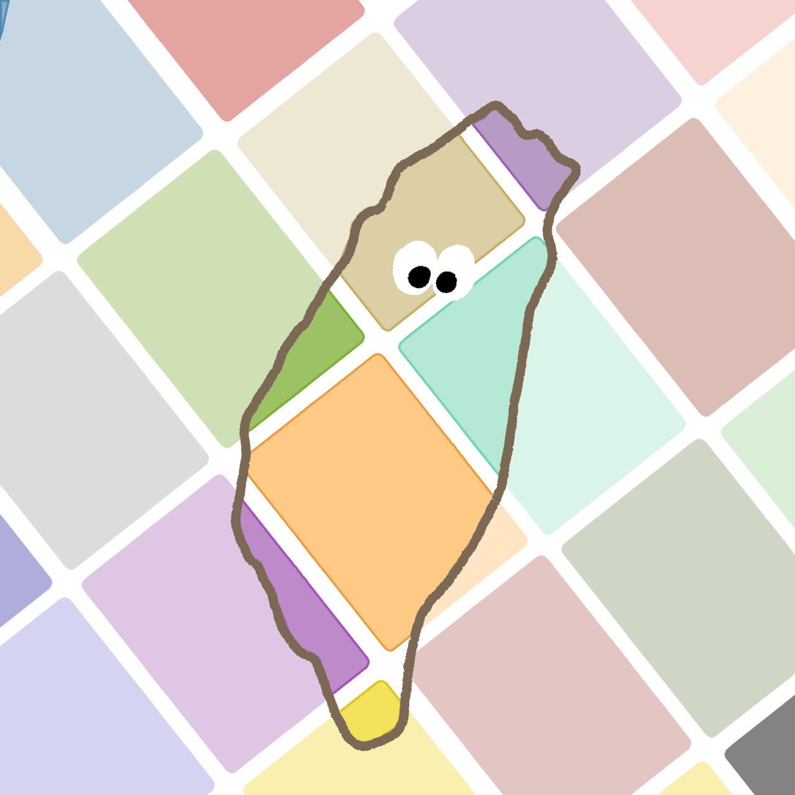

台味日常顏選
專屬於台灣人的穿搭風格
庶民時尚
庶民時尚

#056fbd

#942f6c
#07060b
#e94679
充滿你我生活的東西
無所不在
無所不在
#ef8388
#9f3c00
#12316b
#c5c9cc
只有台灣人懂的幽默
本土笑梗
本土笑梗
#000000
#fcf74e
#cfcfcf
#ff97ee
你一定看過或聽過這些攤販
路邊叫賣
路邊叫賣
#e7e6c5
#fc3362
#0163d6
#837654
台灣民間傳統文化與習俗
地方民俗
地方民俗
#f2e55f

#b77b5f
#e7ae16
#c30226
台灣人才相信的神秘力量與禁忌
台式迷信
台式迷信
#000000
#95b94d
#cfcfcf
#f9ef8d
再熟悉不過的台式建築美學
台味街景
台味街景
#c0d3b5
#1b6a95
#899493
#0269c8

台味日常顏選
台灣的在地文化由各式各樣具標誌性的顏色組成，看看左邊的28種顏色，你第一時間會聯想到台灣的什麼物件呢？